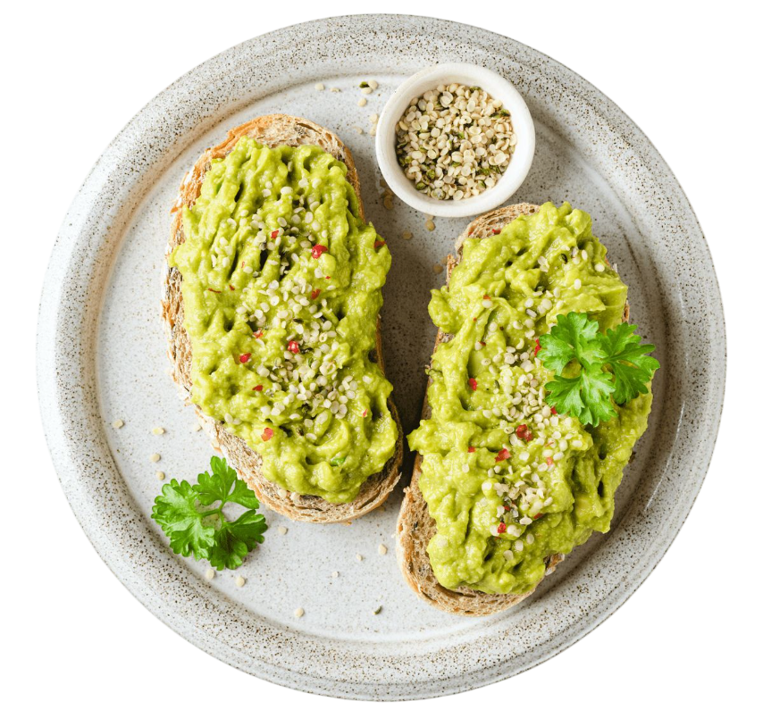

Tostadas de Palta con Huevo y Sésamo
El desayuno o snack perfecto: grasas saludables, proteínas y carbohidratos complejos listos en menos de 10 minutos. Energía para toda la mañana.
⏱️ Tiempo total: 10 min
🍴 Porciones: 1-2
💪 Dificultad: Fácil

Ingredientes
- 2 rebanadas de pan integral o de masa madre.
- 1 palta (aguacate) madura.
- 1 ó 2 huevos (fritos, revueltos o poché).
- Jugo de 1/4 de limón o lima.
- Sal marina, pimienta negra y hojuelas de chile (opcional).
- Semillas de sésamo o chía (para topping).
Preparación
- Paso 1: Tostar. Tuesta las rebanadas de pan hasta que estén doradas y crujientes.
- Paso 2: Preparar la Palta. Corta la palta por la mitad, retira el hueso y saca la pulpa. En un tazón pequeño, machácala con un tenedor.
- Paso 3: Sazonar la Palta. Sazona la palta con sal, pimienta y el jugo de limón o lima. El limón no solo da sabor, sino que evita que se oxide.
- Paso 4: Cocinar el Huevo. Mientras tuestas el pan, prepara el huevo a tu gusto (frito, poché o revuelto).
- Paso 5: Montar. Unta generosamente la mezcla de palta sobre las tostadas. Coloca el huevo encima. Termina espolvoreando con semillas de sésamo y un poco de hojuelas de chile si te gusta el picante.